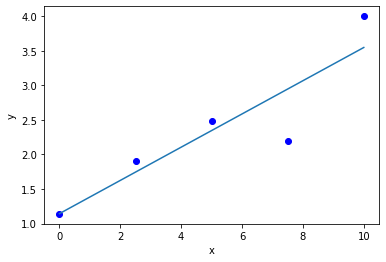
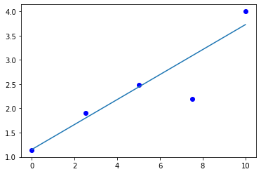
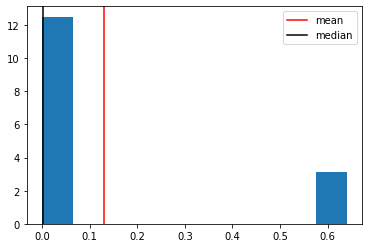
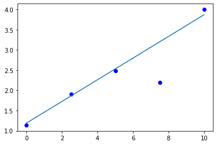
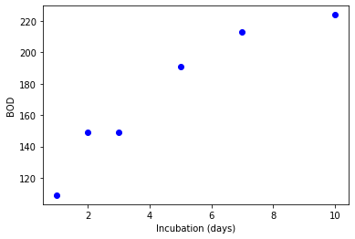
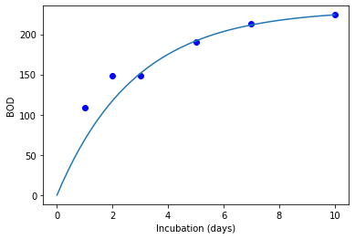

<?xml version="1.0" encoding="utf-8"?>
<!DOCTYPE html PUBLIC "-//W3C//DTD XHTML 1.0 Strict//EN"
"http://www.w3.org/TR/xhtml1/DTD/xhtml1-strict.dtd">
<html xmlns="http://www.w3.org/1999/xhtml" lang="en" xml:lang="en">
<head>
<!-- 2020-03-31 Tue 07:32 -->
<meta http-equiv="Content-Type" content="text/html;charset=utf-8" />
<meta name="viewport" content="width=device-width, initial-scale=1" />
<title>Lies, damn lies, and statistics</title>
<meta name="generator" content="Org mode" />
<meta name="author" content="John Kitchin" />
<meta name="keywords" content="scipy.optimize.minimize" />
<style type="text/css">
 <!--/*--><![CDATA[/*><!--*/
  .title  { text-align: center;
             margin-bottom: .2em; }
  .subtitle { text-align: center;
              font-size: medium;
              font-weight: bold;
              margin-top:0; }
  .todo   { font-family: monospace; color: red; }
  .done   { font-family: monospace; color: green; }
  .priority { font-family: monospace; color: orange; }
  .tag    { background-color: #eee; font-family: monospace;
            padding: 2px; font-size: 80%; font-weight: normal; }
  .timestamp { color: #bebebe; }
  .timestamp-kwd { color: #5f9ea0; }
  .org-right  { margin-left: auto; margin-right: 0px;  text-align: right; }
  .org-left   { margin-left: 0px;  margin-right: auto; text-align: left; }
  .org-center { margin-left: auto; margin-right: auto; text-align: center; }
  .underline { text-decoration: underline; }
  #postamble p, #preamble p { font-size: 90%; margin: .2em; }
  p.verse { margin-left: 3%; }
  pre {
    border: 1px solid #ccc;
    box-shadow: 3px 3px 3px #eee;
    padding: 8pt;
    font-family: monospace;
    overflow: auto;
    margin: 1.2em;
  }
  pre.src {
    position: relative;
    overflow: visible;
    padding-top: 1.2em;
  }
  pre.src:before {
    display: none;
    position: absolute;
    background-color: white;
    top: -10px;
    right: 10px;
    padding: 3px;
    border: 1px solid black;
  }
  pre.src:hover:before { display: inline;}
  /* Languages per Org manual */
  pre.src-asymptote:before { content: 'Asymptote'; }
  pre.src-awk:before { content: 'Awk'; }
  pre.src-C:before { content: 'C'; }
  /* pre.src-C++ doesn't work in CSS */
  pre.src-clojure:before { content: 'Clojure'; }
  pre.src-css:before { content: 'CSS'; }
  pre.src-D:before { content: 'D'; }
  pre.src-ditaa:before { content: 'ditaa'; }
  pre.src-dot:before { content: 'Graphviz'; }
  pre.src-calc:before { content: 'Emacs Calc'; }
  pre.src-emacs-lisp:before { content: 'Emacs Lisp'; }
  pre.src-fortran:before { content: 'Fortran'; }
  pre.src-gnuplot:before { content: 'gnuplot'; }
  pre.src-haskell:before { content: 'Haskell'; }
  pre.src-hledger:before { content: 'hledger'; }
  pre.src-java:before { content: 'Java'; }
  pre.src-js:before { content: 'Javascript'; }
  pre.src-latex:before { content: 'LaTeX'; }
  pre.src-ledger:before { content: 'Ledger'; }
  pre.src-lisp:before { content: 'Lisp'; }
  pre.src-lilypond:before { content: 'Lilypond'; }
  pre.src-lua:before { content: 'Lua'; }
  pre.src-matlab:before { content: 'MATLAB'; }
  pre.src-mscgen:before { content: 'Mscgen'; }
  pre.src-ocaml:before { content: 'Objective Caml'; }
  pre.src-octave:before { content: 'Octave'; }
  pre.src-org:before { content: 'Org mode'; }
  pre.src-oz:before { content: 'OZ'; }
  pre.src-plantuml:before { content: 'Plantuml'; }
  pre.src-processing:before { content: 'Processing.js'; }
  pre.src-python:before { content: 'Python'; }
  pre.src-R:before { content: 'R'; }
  pre.src-ruby:before { content: 'Ruby'; }
  pre.src-sass:before { content: 'Sass'; }
  pre.src-scheme:before { content: 'Scheme'; }
  pre.src-screen:before { content: 'Gnu Screen'; }
  pre.src-sed:before { content: 'Sed'; }
  pre.src-sh:before { content: 'shell'; }
  pre.src-sql:before { content: 'SQL'; }
  pre.src-sqlite:before { content: 'SQLite'; }
  /* additional languages in org.el's org-babel-load-languages alist */
  pre.src-forth:before { content: 'Forth'; }
  pre.src-io:before { content: 'IO'; }
  pre.src-J:before { content: 'J'; }
  pre.src-makefile:before { content: 'Makefile'; }
  pre.src-maxima:before { content: 'Maxima'; }
  pre.src-perl:before { content: 'Perl'; }
  pre.src-picolisp:before { content: 'Pico Lisp'; }
  pre.src-scala:before { content: 'Scala'; }
  pre.src-shell:before { content: 'Shell Script'; }
  pre.src-ebnf2ps:before { content: 'ebfn2ps'; }
  /* additional language identifiers per "defun org-babel-execute"
       in ob-*.el */
  pre.src-cpp:before  { content: 'C++'; }
  pre.src-abc:before  { content: 'ABC'; }
  pre.src-coq:before  { content: 'Coq'; }
  pre.src-groovy:before  { content: 'Groovy'; }
  /* additional language identifiers from org-babel-shell-names in
     ob-shell.el: ob-shell is the only babel language using a lambda to put
     the execution function name together. */
  pre.src-bash:before  { content: 'bash'; }
  pre.src-csh:before  { content: 'csh'; }
  pre.src-ash:before  { content: 'ash'; }
  pre.src-dash:before  { content: 'dash'; }
  pre.src-ksh:before  { content: 'ksh'; }
  pre.src-mksh:before  { content: 'mksh'; }
  pre.src-posh:before  { content: 'posh'; }
  /* Additional Emacs modes also supported by the LaTeX listings package */
  pre.src-ada:before { content: 'Ada'; }
  pre.src-asm:before { content: 'Assembler'; }
  pre.src-caml:before { content: 'Caml'; }
  pre.src-delphi:before { content: 'Delphi'; }
  pre.src-html:before { content: 'HTML'; }
  pre.src-idl:before { content: 'IDL'; }
  pre.src-mercury:before { content: 'Mercury'; }
  pre.src-metapost:before { content: 'MetaPost'; }
  pre.src-modula-2:before { content: 'Modula-2'; }
  pre.src-pascal:before { content: 'Pascal'; }
  pre.src-ps:before { content: 'PostScript'; }
  pre.src-prolog:before { content: 'Prolog'; }
  pre.src-simula:before { content: 'Simula'; }
  pre.src-tcl:before { content: 'tcl'; }
  pre.src-tex:before { content: 'TeX'; }
  pre.src-plain-tex:before { content: 'Plain TeX'; }
  pre.src-verilog:before { content: 'Verilog'; }
  pre.src-vhdl:before { content: 'VHDL'; }
  pre.src-xml:before { content: 'XML'; }
  pre.src-nxml:before { content: 'XML'; }
  /* add a generic configuration mode; LaTeX export needs an additional
     (add-to-list 'org-latex-listings-langs '(conf " ")) in .emacs */
  pre.src-conf:before { content: 'Configuration File'; }

  table { border-collapse:collapse; }
  caption.t-above { caption-side: top; }
  caption.t-bottom { caption-side: bottom; }
  td, th { vertical-align:top;  }
  th.org-right  { text-align: center;  }
  th.org-left   { text-align: center;   }
  th.org-center { text-align: center; }
  td.org-right  { text-align: right;  }
  td.org-left   { text-align: left;   }
  td.org-center { text-align: center; }
  dt { font-weight: bold; }
  .footpara { display: inline; }
  .footdef  { margin-bottom: 1em; }
  .figure { padding: 1em; }
  .figure p { text-align: center; }
  .equation-container {
    display: table;
    text-align: center;
    width: 100%;
  }
  .equation {
    vertical-align: middle;
  }
  .equation-label {
    display: table-cell;
    text-align: right;
    vertical-align: middle;
  }
  .inlinetask {
    padding: 10px;
    border: 2px solid gray;
    margin: 10px;
    background: #ffffcc;
  }
  #org-div-home-and-up
   { text-align: right; font-size: 70%; white-space: nowrap; }
  textarea { overflow-x: auto; }
  .linenr { font-size: smaller }
  .code-highlighted { background-color: #ffff00; }
  .org-info-js_info-navigation { border-style: none; }
  #org-info-js_console-label
    { font-size: 10px; font-weight: bold; white-space: nowrap; }
  .org-info-js_search-highlight
    { background-color: #ffff00; color: #000000; font-weight: bold; }
  .org-svg { width: 90%; }
  /*]]>*/-->
</style>
<script type="text/javascript">
/*
@licstart  The following is the entire license notice for the
JavaScript code in this tag.

Copyright (C) 2012-2019 Free Software Foundation, Inc.

The JavaScript code in this tag is free software: you can
redistribute it and/or modify it under the terms of the GNU
General Public License (GNU GPL) as published by the Free Software
Foundation, either version 3 of the License, or (at your option)
any later version.  The code is distributed WITHOUT ANY WARRANTY;
without even the implied warranty of MERCHANTABILITY or FITNESS
FOR A PARTICULAR PURPOSE.  See the GNU GPL for more details.

As additional permission under GNU GPL version 3 section 7, you
may distribute non-source (e.g., minimized or compacted) forms of
that code without the copy of the GNU GPL normally required by
section 4, provided you include this license notice and a URL
through which recipients can access the Corresponding Source.


@licend  The above is the entire license notice
for the JavaScript code in this tag.
*/
<!--/*--><![CDATA[/*><!--*/
 function CodeHighlightOn(elem, id)
 {
   var target = document.getElementById(id);
   if(null != target) {
     elem.cacheClassElem = elem.className;
     elem.cacheClassTarget = target.className;
     target.className = "code-highlighted";
     elem.className   = "code-highlighted";
   }
 }
 function CodeHighlightOff(elem, id)
 {
   var target = document.getElementById(id);
   if(elem.cacheClassElem)
     elem.className = elem.cacheClassElem;
   if(elem.cacheClassTarget)
     target.className = elem.cacheClassTarget;
 }
/*]]>*///-->
</script>
<script type="text/x-mathjax-config">
    MathJax.Hub.Config({
        displayAlign: "center",
        displayIndent: "0em",

        "HTML-CSS": { scale: 100,
                        linebreaks: { automatic: "false" },
                        webFont: "TeX"
                       },
        SVG: {scale: 100,
              linebreaks: { automatic: "false" },
              font: "TeX"},
        NativeMML: {scale: 100},
        TeX: { equationNumbers: {autoNumber: "AMS"},
               MultLineWidth: "85%",
               TagSide: "right",
               TagIndent: ".8em"
             }
});
</script>
<script type="text/javascript"
        src="https://cdnjs.cloudflare.com/ajax/libs/mathjax/2.7.0/MathJax.js?config=TeX-AMS_HTML"></script>
</head>
<body>
<div id="content">
<h1 class="title">Lies, damn lies, and statistics</h1>
<div id="table-of-contents">
<h2>Table of Contents</h2>
<div id="text-table-of-contents">
<ul>
<li><a href="#org929cfa2">1. Uncertainty estimates from curvefit and scipy.optimize.minimize</a></li>
<li><a href="#org4fda8ab">2. Effects of outliers on regression</a>
<ul>
<li><a href="#org68ea974">2.1. Minimizing the summed absolute errors</a></li>
<li><a href="#org99281ab">2.2. Robust regression approaches</a>
<ul>
<li><a href="#org3ef0231">2.2.1. Least Median regression</a></li>
</ul>
</li>
<li><a href="#orgf1d7d6e">2.3. Weighted nonlinear regression</a></li>
</ul>
</li>
<li><a href="#orgee97d23">3. Summary</a></li>
</ul>
</div>
</div>

<div id="outline-container-org929cfa2" class="outline-2">
<h2 id="org929cfa2"><span class="section-number-2">1</span> Uncertainty estimates from curvefit and scipy.optimize.minimize</h2>
<div class="outline-text-2" id="text-1">
<p>
We previously examined how to estimate uncertainty from the covariance matrix returned from curve_fit. Recall we need the diagonal of the covariance matrix, which is estimated during the fitting.  The covariance matrix is related to the inverse Hessian matrix. We will explore how these are related here.
</p>

<p>
We will consider fitting a line to the following data.
</p>

<div class="org-src-container">
<pre class="src src-ipython"><span style="color: #0000FF;">import</span> numpy <span style="color: #0000FF;">as</span> np
<span style="color: #0000FF;">from</span> scipy.optimize <span style="color: #0000FF;">import</span> curve_fit

<span style="color: #BA36A5;">x</span> = np.array([0.,    2.5,   5.,    7.5,  10. ])
<span style="color: #BA36A5;">y</span> = np.array([1.14,    1.91,  2.48,  2.2,  4.0])

<span style="color: #0000FF;">def</span> <span style="color: #006699;">model</span>(x, m, b):
<span style="color: #9B9B9B; background-color: #EDEDED;"> </span>   <span style="color: #0000FF;">return</span> m * x + b

<span style="color: #BA36A5;">p</span>, <span style="color: #BA36A5;">pcov</span> = curve_fit(model, x, y, [0.2, 0.1])
<span style="color: #0000FF;">print</span>(p)
pcov
</pre>
</div>

<p>
[0.2404     1.14399999]
</p>

<pre class="example">
array([[ 0.00430672, -0.0215336 ],
       [-0.0215336 ,  0.161502  ]])
</pre>

<p>
<code>scipy.optimize.minimize</code> does not return the covariance matrix; with <i>some</i> of the methods, it returns an estimate of the inverse Hessian matrix. In theory, the covariance matrix and the inverse hessian are related to each other with \(cov = 0.5 * H^{-1}\). Note this relationship is specific to the minimization of the summed squared errors.
</p>

<div class="org-src-container">
<pre class="src src-ipython"><span style="color: #0000FF;">from</span> scipy.optimize <span style="color: #0000FF;">import</span> minimize

<span style="color: #0000FF;">def</span> <span style="color: #006699;">model</span>(pars, x):
<span style="color: #9B9B9B; background-color: #EDEDED;"> </span>   <span style="color: #BA36A5;">x</span> = np.array(x)
<span style="color: #9B9B9B; background-color: #EDEDED;"> </span>   <span style="color: #BA36A5;">m</span>, <span style="color: #BA36A5;">b</span> = pars
<span style="color: #9B9B9B; background-color: #EDEDED;"> </span>   <span style="color: #0000FF;">return</span> m * x + b

<span style="color: #0000FF;">def</span> <span style="color: #006699;">objective</span>(pars):
<span style="color: #9B9B9B; background-color: #EDEDED;"> </span>   <span style="color: #BA36A5;">errs</span> = y - model(pars, x)
<span style="color: #9B9B9B; background-color: #EDEDED;"> </span>   <span style="color: #0000FF;">return</span> np.<span style="color: #006FE0;">sum</span>(errs**2)

<span style="color: #BA36A5;">sol</span> = minimize(objective, [0.2, 1])
<span style="color: #0000FF;">print</span>(sol.x)
0.5 * sol.hess_inv
</pre>
</div>

<p>
[0.2404     1.14399997]
</p>

<pre class="example">
array([[ 0.01019113, -0.06596866],
       [-0.06596866,  0.49131361]])
</pre>

<p>
That doesn't look very good. <b>But</b>, remember that it is an <i>estimate</i> of the Hessian and we need to be careful about the accuracy. The minimizer terminates when the solution reaches the tolerance, <i>not</i> when the Hessian is accurate! If we increase the tolerance, we get a more accurate result.
</p>

<div class="org-src-container">
<pre class="src src-ipython"><span style="color: #BA36A5;">sol</span> = minimize(objective, [0.2, 1], tol=1e-9)
<span style="color: #0000FF;">print</span>(sol.x)
<span style="color: #0000FF;">print</span>(0.5 * sol.hess_inv)
</pre>
</div>

<pre class="example">
[0.24039999 1.144     ]
[[ 0.00424425 -0.02201408]
 [-0.02201408  0.16613705]]

</pre>

<p>
With the increased accuracy, you can see the covariance is approximately equal to 1/2 the inverse Hessian. That means you can use it to estimate the uncertainty in the same way we did with curve_fit.
</p>

<p>
Not all solvers generate the inverse Hessian matrix, e.g. <code>SLSQP</code> does not do it. You have three options. One is always to compute the Hessian analytically. The other two options rely on libraries that use automatic differentiation to compute the relevant derivatives. One is to use numdifftools (which you may have to install). Either way, you have to compute the Hessian on the objective function that is being minimized. One way to get this is to use a numerical package designed to compute this.
</p>

<div class="org-src-container">
<pre class="src src-ipython">!pip install numdifftools
</pre>
</div>

<p>
Collecting numdifftools
  Downloading numdifftools-0.9.39-py2.py3-none-any.whl (953 kB)
[?25l
     |▍                               | 10 kB 554 kB/s eta 0:00:02
     |▊                               | 20 kB 1.1 MB/s eta 0:00:01
     |█                               | 30 kB 1.2 MB/s eta 0:00:01
     |█▍                              | 40 kB 1.1 MB/s eta 0:00:01
     |█▊                              | 51 kB 1.4 MB/s eta 0:00:01
     |██                              | 61 kB 1.7 MB/s eta 0:00:01
     |██▍                             | 71 kB 1.7 MB/s eta 0:00:01
     |██▊                             | 81 kB 1.6 MB/s eta 0:00:01
     |███                             | 92 kB 1.7 MB/s eta 0:00:01
     |███▍                            | 102 kB 1.9 MB/s eta 0:00:01
     |███▉                            | 112 kB 1.9 MB/s eta 0:00:01
     |████▏                           | 122 kB 1.9 MB/s eta 0:00:01
     |████▌                           | 133 kB 1.9 MB/s eta 0:00:01
     |████▉                           | 143 kB 1.9 MB/s eta 0:00:01
     |█████▏                          | 153 kB 1.9 MB/s eta 0:00:01
     |█████▌                          | 163 kB 1.9 MB/s eta 0:00:01
     |█████▉                          | 174 kB 1.9 MB/s eta 0:00:01
     |██████▏                         | 184 kB 1.9 MB/s eta 0:00:01
     |██████▌                         | 194 kB 1.9 MB/s eta 0:00:01
     |██████▉                         | 204 kB 1.9 MB/s eta 0:00:01
     |███████▏                        | 215 kB 1.9 MB/s eta 0:00:01
     |███████▋                        | 225 kB 1.9 MB/s eta 0:00:01
     |████████                        | 235 kB 1.9 MB/s eta 0:00:01
     |████████▎                       | 245 kB 1.9 MB/s eta 0:00:01
     |████████▋                       | 256 kB 1.9 MB/s eta 0:00:01
     |█████████                       | 266 kB 1.9 MB/s eta 0:00:01
     |█████████▎                      | 276 kB 1.9 MB/s eta 0:00:01
     |█████████▋                      | 286 kB 1.9 MB/s eta 0:00:01
     |██████████                      | 296 kB 1.9 MB/s eta 0:00:01
     |██████████▎                     | 307 kB 1.9 MB/s eta 0:00:01
     |██████████▋                     | 317 kB 1.9 MB/s eta 0:00:01
     |███████████                     | 327 kB 1.9 MB/s eta 0:00:01
     |███████████▍                    | 337 kB 1.9 MB/s eta 0:00:01
     |███████████▊                    | 348 kB 1.9 MB/s eta 0:00:01
     |████████████                    | 358 kB 1.9 MB/s eta 0:00:01
     |████████████▍                   | 368 kB 1.9 MB/s eta 0:00:01
     |████████████▊                   | 378 kB 1.9 MB/s eta 0:00:01
     |█████████████                   | 389 kB 1.9 MB/s eta 0:00:01
     |█████████████▍                  | 399 kB 1.9 MB/s eta 0:00:01
     |█████████████▊                  | 409 kB 1.9 MB/s eta 0:00:01
     |██████████████                  | 419 kB 1.9 MB/s eta 0:00:01
     |██████████████▍                 | 430 kB 1.9 MB/s eta 0:00:01
     |██████████████▊                 | 440 kB 1.9 MB/s eta 0:00:01
     |███████████████▏                | 450 kB 1.9 MB/s eta 0:00:01
     |███████████████▌                | 460 kB 1.9 MB/s eta 0:00:01
     |███████████████▉                | 471 kB 1.9 MB/s eta 0:00:01
     |████████████████▏               | 481 kB 1.9 MB/s eta 0:00:01
     |████████████████▌               | 491 kB 1.9 MB/s eta 0:00:01
     |████████████████▉               | 501 kB 1.9 MB/s eta 0:00:01
     |█████████████████▏              | 512 kB 1.9 MB/s eta 0:00:01
     |█████████████████▌              | 522 kB 1.9 MB/s eta 0:00:01
     |█████████████████▉              | 532 kB 1.9 MB/s eta 0:00:01
     |██████████████████▏             | 542 kB 1.9 MB/s eta 0:00:01
     |██████████████████▌             | 552 kB 1.9 MB/s eta 0:00:01
     |███████████████████             | 563 kB 1.9 MB/s eta 0:00:01
     |███████████████████▎            | 573 kB 1.9 MB/s eta 0:00:01
     |███████████████████▋            | 583 kB 1.9 MB/s eta 0:00:01
     |████████████████████            | 593 kB 1.9 MB/s eta 0:00:01
     |████████████████████▎           | 604 kB 1.9 MB/s eta 0:00:01
     |████████████████████▋           | 614 kB 1.9 MB/s eta 0:00:01
     |█████████████████████           | 624 kB 1.9 MB/s eta 0:00:01
     |█████████████████████▎          | 634 kB 1.9 MB/s eta 0:00:01
     |█████████████████████▋          | 645 kB 1.9 MB/s eta 0:00:01
     |██████████████████████          | 655 kB 1.9 MB/s eta 0:00:01
     |██████████████████████▎         | 665 kB 1.9 MB/s eta 0:00:01
     |██████████████████████▊         | 675 kB 1.9 MB/s eta 0:00:01
     |███████████████████████         | 686 kB 1.9 MB/s eta 0:00:01
     |███████████████████████▍        | 696 kB 1.9 MB/s eta 0:00:01
     |███████████████████████▊        | 706 kB 1.9 MB/s eta 0:00:01
     |████████████████████████        | 716 kB 1.9 MB/s eta 0:00:01
     |████████████████████████▍       | 727 kB 1.9 MB/s eta 0:00:01
     |████████████████████████▊       | 737 kB 1.9 MB/s eta 0:00:01
     |█████████████████████████       | 747 kB 1.9 MB/s eta 0:00:01
     |█████████████████████████▍      | 757 kB 1.9 MB/s eta 0:00:01
     |█████████████████████████▊      | 768 kB 1.9 MB/s eta 0:00:01
     |██████████████████████████▏     | 778 kB 1.9 MB/s eta 0:00:01
     |██████████████████████████▌     | 788 kB 1.9 MB/s eta 0:00:01
     |██████████████████████████▉     | 798 kB 1.9 MB/s eta 0:00:01
     |███████████████████████████▏    | 808 kB 1.9 MB/s eta 0:00:01
     |███████████████████████████▌    | 819 kB 1.9 MB/s eta 0:00:01
     |███████████████████████████▉    | 829 kB 1.9 MB/s eta 0:00:01
     |████████████████████████████▏   | 839 kB 1.9 MB/s eta 0:00:01
     |████████████████████████████▌   | 849 kB 1.9 MB/s eta 0:00:01
     |████████████████████████████▉   | 860 kB 1.9 MB/s eta 0:00:01
     |█████████████████████████████▏  | 870 kB 1.9 MB/s eta 0:00:01
     |█████████████████████████████▌  | 880 kB 1.9 MB/s eta 0:00:01
     |██████████████████████████████  | 890 kB 1.9 MB/s eta 0:00:01
     |██████████████████████████████▎ | 901 kB 1.9 MB/s eta 0:00:01
     |██████████████████████████████▋ | 911 kB 1.9 MB/s eta 0:00:01
     |███████████████████████████████ | 921 kB 1.9 MB/s eta 0:00:01
     |███████████████████████████████▎| 931 kB 1.9 MB/s eta 0:00:01
     |███████████████████████████████▋| 942 kB 1.9 MB/s eta 0:00:01
     |████████████████████████████████| 952 kB 1.9 MB/s eta 0:00:01
     |████████████████████████████████| 953 kB 1.9 MB/s
[?25hInstalling collected packages: numdifftools
Successfully installed numdifftools-0.9.39
</p>

<p>
Now, similar to what we did with <code>scipy.misc.derivative</code>, we can write a function and then use numdifftools to get the Hessian of the function. Here, we define the sum of the squared errors function, then create a Hessian function for that. We can use the Hessian function to evaluate the Hessian at the parameters at the minimum. We use <code>numpy.linalg.inv</code> to get the inverse of the Hessian to compute the covariance.
</p>

<div class="org-src-container">
<pre class="src src-ipython"><span style="color: #0000FF;">import</span> numdifftools <span style="color: #0000FF;">as</span> nd

<span style="color: #0000FF;">def</span> <span style="color: #006699;">f</span>(pars):
<span style="color: #9B9B9B; background-color: #EDEDED;"> </span>   <span style="color: #BA36A5;">m</span>, <span style="color: #BA36A5;">b</span> = pars
<span style="color: #9B9B9B; background-color: #EDEDED;"> </span>   <span style="color: #0000FF;">return</span> np.<span style="color: #006FE0;">sum</span>((y - (m * x + b))**2)

<span style="color: #BA36A5;">H</span> = nd.Hessian(f)  <span style="color: #8D8D84;"># </span><span style="color: #8D8D84; font-style: italic;">H is an executable function now that takes one argument, the pars.</span>
0.5 * np.linalg.inv(H(p))
</pre>
</div>

<pre class="example">
array([[ 0.004, -0.02 ],
       [-0.02 ,  0.15 ]])
</pre>

<p>
<code>numdifftools</code> (<a href="https://pypi.org/project/numdifftools/">https://pypi.org/project/numdifftools/</a>) is a numerical differentiation package. It is more sophisticated than <code>scipy.misc.derivative</code> but is fundamentally still a numerical approximation to the derivatives. Now you can use these to estimate the uncertainties even for optimizers that don't provide the estimated inverse Hessian.
</p>

<p>
Later we will learn about one more approach to getting the derivatives that is used in machine learning called automatic differentiation.
</p>
</div>
</div>

<div id="outline-container-org4fda8ab" class="outline-2">
<h2 id="org4fda8ab"><span class="section-number-2">2</span> Effects of outliers on regression</h2>
<div class="outline-text-2" id="text-2">
<p>
Outliers can have a significant effect on the fit of a model to data. Let's consider this example, where we want to fit a line to some data that has an outlier in it. This is just a linear regression, and we start out using <code>numpy.polyfit</code>.
</p>

<div class="org-src-container">
<pre class="src src-ipython"><span style="color: #0000FF;">import</span> numpy <span style="color: #0000FF;">as</span> np
%matplotlib inline
<span style="color: #0000FF;">import</span> matplotlib.pyplot <span style="color: #0000FF;">as</span> plt

<span style="color: #BA36A5;">x</span> = [0.,      2.5,   5.,    7.5,  10. ]
<span style="color: #BA36A5;">y</span> = [1.14,    1.91,  2.48,  2.2,  4.0]
<span style="color: #8D8D84;">#                            </span><span style="color: #8D8D84; font-style: italic;">^</span>
<span style="color: #8D8D84;">#                            </span><span style="color: #8D8D84; font-style: italic;">|</span>
<span style="color: #8D8D84;">#                         </span><span style="color: #8D8D84; font-style: italic;">outlier</span>

<span style="color: #BA36A5;">p</span> = np.polyfit(x, y, 1)
<span style="color: #0000FF;">print</span>(p)
<span style="color: #BA36A5;">xfit</span> = np.linspace(0, 10)

plt.plot(x, y, <span style="color: #008000;">'bo'</span>)
plt.plot(xfit, np.polyval(p, xfit));
plt.xlabel(<span style="color: #008000;">'x'</span>)
plt.ylabel(<span style="color: #008000;">'y'</span>)
</pre>
</div>

<p>
[0.2404 1.144 ]
</p>

<pre class="example">
Text(0, 0.5, 'y')
</pre>


<pre class="example">
&lt;Figure size 432x288 with 1 Axes&gt;
</pre>


<div class="figure">
<p>
</p>
</div>

<p>
You can see that the fitted line is "dragged" towards the outlier. We say that least squares minimization is not <i>robust</i> to outliers.
</p>

<p>
This may be undesirable because if you believe there is an outlier, perhaps due to experimental error, then this point affects the accuracy of the model more than the other points you believe to be more accurate.
</p>

<p>
Today we will consider a variety of approaches to minimize the effects of outliers. We first begin by re-examining how these parameters are obtained. Here, we illustrate that the results from polyfit are equivalent to minimizing the summed squared errors between the model and the data.
</p>

<div class="org-src-container">
<pre class="src src-ipython"><span style="color: #0000FF;">from</span> scipy.optimize <span style="color: #0000FF;">import</span> minimize

<span style="color: #0000FF;">def</span> <span style="color: #006699;">model</span>(pars, x):
<span style="color: #9B9B9B; background-color: #EDEDED;"> </span>   <span style="color: #BA36A5;">x</span> = np.array(x)
<span style="color: #9B9B9B; background-color: #EDEDED;"> </span>   <span style="color: #BA36A5;">m</span>, <span style="color: #BA36A5;">b</span> = pars
<span style="color: #9B9B9B; background-color: #EDEDED;"> </span>   <span style="color: #0000FF;">return</span> m * x + b

<span style="color: #0000FF;">def</span> <span style="color: #006699;">objective</span>(pars):
<span style="color: #9B9B9B; background-color: #EDEDED;"> </span>   <span style="color: #BA36A5;">errs</span> = y - model(pars, x)
<span style="color: #9B9B9B; background-color: #EDEDED;"> </span>   <span style="color: #0000FF;">return</span> np.<span style="color: #006FE0;">sum</span>(errs**2)

minimize(objective, [0.2, 1])
</pre>
</div>

<pre class="example">
     fun: 0.8075100000000078
hess_inv: array([[ 0.02038226, -0.13193732],
      [-0.13193732,  0.98262721]])
     jac: array([ 5.28991222e-07, -3.05473804e-07])
 message: 'Optimization terminated successfully.'
    nfev: 20
     nit: 2
    njev: 5
  status: 0
 success: True
       x: array([0.2404    , 1.14399997])
</pre>

<p>
The problem is that we are minimizing the error<sup>2</sup>, which puts more weight on large errors than small errors.
</p>

<p>
Least squares regression is also called L<sub>2</sub> norm regression, that is we minimize the L<sub>2</sub> norm of the vector.
</p>
</div>

<div id="outline-container-org68ea974" class="outline-3">
<h3 id="org68ea974"><span class="section-number-3">2.1</span> Minimizing the summed absolute errors</h3>
<div class="outline-text-3" id="text-2-1">
<p>
We can choose to minimize another objective function, for example the summed absolute value of the errors. This will reduce the emphasis on large errors. This is  also called L<sub>1</sub> norm regression.
</p>

<div class="org-src-container">
<pre class="src src-ipython"><span style="color: #0000FF;">def</span> <span style="color: #006699;">objective</span>(pars):
<span style="color: #9B9B9B; background-color: #EDEDED;"> </span>   <span style="color: #BA36A5;">errs</span> = y - model(pars, x)
<span style="color: #9B9B9B; background-color: #EDEDED;"> </span>   <span style="color: #0000FF;">return</span> np.<span style="color: #006FE0;">sum</span>(np.<span style="color: #006FE0;">abs</span>(errs))

<span style="color: #BA36A5;">L1_sol</span> = minimize(objective, [0.2, 1])
<span style="color: #0000FF;">print</span>(L1_sol.x)
plt.plot(x, y, <span style="color: #008000;">'bo'</span>)
plt.plot(xfit, model(L1_sol.x, xfit))
</pre>
</div>

<p>
[0.26845682 1.14      ]
</p>

<pre class="example">
[&lt;matplotlib.lines.Line2D at 0x10184669d0&gt;]
</pre>


<pre class="example">
&lt;Figure size 432x288 with 1 Axes&gt;
</pre>


<div class="figure">
<p>
</p>
</div>

<p>
There is a historical reason this is not done a lot, and that is the absolute value function has a discontinuity in its first derivative at the origin which can be problematic in some optimization algorithms. It is obviously not a problem here, and you can see that the outlier has less of an effect on the fitted line in this case.
</p>

<p>
Finally, we can generalize these ideas to something called L<sub>p</sub> norm regressions where we seek to minimize:
</p>

<p>
\(\sum |\epsilon_i|^p\)
</p>

<p>
In <a href="https://www.tandfonline.com/doi/abs/10.1080/00401706.1972.10488892">this paper</a> a value of \(p=1.5\) is recommended for general use. Note this is less than two, and greater than one, so it is expected to have an intermediate effect compared to L<sub>1</sub> and L<sub>2</sub> norm regression.
</p>

<div class="org-src-container">
<pre class="src src-ipython"><span style="color: #0000FF;">def</span> <span style="color: #006699;">objective</span>(pars):
<span style="color: #9B9B9B; background-color: #EDEDED;"> </span>   <span style="color: #BA36A5;">p</span> = 1.5
<span style="color: #9B9B9B; background-color: #EDEDED;"> </span>   <span style="color: #BA36A5;">errs</span> = y - model(pars, x)
<span style="color: #9B9B9B; background-color: #EDEDED;"> </span>   <span style="color: #0000FF;">return</span> np.<span style="color: #006FE0;">sum</span>(np.<span style="color: #006FE0;">abs</span>(errs)**p)

<span style="color: #BA36A5;">Lp_sol</span> = minimize(objective, [0.2, 1])
<span style="color: #0000FF;">print</span>(Lp_sol.x)
plt.plot(x, y, <span style="color: #008000;">'bo'</span>)
plt.plot(xfit, model(Lp_sol.x, xfit))
</pre>
</div>

<p>
[0.25741034 1.15352086]
</p>

<pre class="example">
[&lt;matplotlib.lines.Line2D at 0x10197f2550&gt;]
</pre>


<pre class="example">
&lt;Figure size 432x288 with 1 Axes&gt;
</pre>


<div class="figure">
<p>
</p>
</div>


<p>
The downside of these approaches is that they complicate the analysis of uncertainty. The uncertainty analysis we have considered so far is only formally correct when we minimize the summed squared errors. It is only approximately correct when something else is minimized.
</p>
</div>
</div>

<div id="outline-container-org99281ab" class="outline-3">
<h3 id="org99281ab"><span class="section-number-3">2.2</span> Robust regression approaches</h3>
<div class="outline-text-3" id="text-2-2">
<p>
An alternative approach to least squares or absolute error minimization is called robust regression (see Applied Regression Analysis, 3rd edition, Draper and Smith, chapter 25). This is a class of methods that uses a different metric to minimize in the objective function.
</p>

<p>
The simplest approach is to minimize the median of the squared error. Note that minimizing the sum of squared errors is practically like minimizing the average or mean squared error. If you have a symmetric distribution of errors, then the mean and median are practically the same. If there is an outlier, however, the mean will be skewed towards the outlier, while the median will be at a position that splits the distribution in half, and is closer to what you believe the mean to be.
</p>

<p>
Here we show that given an asymmetric distribution, the median is smaller than the mean.
</p>

<div class="org-src-container">
<pre class="src src-ipython"><span style="color: #BA36A5;">errs</span> = np.array([0.1, 0.01, 0.05, 0.02, 0.8])
<span style="color: #BA36A5;">s</span> = errs**2
plt.hist(s, density=<span style="color: #D0372D;">True</span>)
plt.axvline(np.mean(s), color=<span style="color: #008000;">'r'</span>)
plt.axvline(np.median(s), color=<span style="color: #008000;">'k'</span>)
plt.legend([<span style="color: #008000;">'mean'</span>, <span style="color: #008000;">'median'</span>])
plt.xlabel(<span style="color: #008000;">''</span>)
</pre>
</div>

<pre class="example">
Text(0.5, 0, '')
</pre>


<pre class="example">
&lt;Figure size 432x288 with 1 Axes&gt;
</pre>


<div class="figure">
<p>
</p>
</div>
</div>

<div id="outline-container-org3ef0231" class="outline-4">
<h4 id="org3ef0231"><span class="section-number-4">2.2.1</span> Least Median regression</h4>
<div class="outline-text-4" id="text-2-2-1">
<p>
It is straightforward to modify the objective function to minimize the median of the squared errors.
</p>

<div class="org-src-container">
<pre class="src src-ipython"><span style="color: #0000FF;">def</span> <span style="color: #006699;">objective</span>(pars):
<span style="color: #9B9B9B; background-color: #EDEDED;"> </span>   <span style="color: #BA36A5;">errs</span> = y - model(pars, x)
<span style="color: #9B9B9B; background-color: #EDEDED;"> </span>   <span style="color: #0000FF;">return</span> np.median(errs**2)

<span style="color: #BA36A5;">LMS_sol</span> = minimize(objective, [0.2, 1])
<span style="color: #0000FF;">print</span>(LMS_sol.x)
plt.plot(x, y, <span style="color: #008000;">'bo'</span>)
plt.plot(xfit, model(LMS_sol.x, xfit))
</pre>
</div>

<p>
[0.26804924 1.18981534]
</p>

<pre class="example">
[&lt;matplotlib.lines.Line2D at 0x10199e6e10&gt;]
</pre>


<pre class="example">
&lt;Figure size 432x288 with 1 Axes&gt;
</pre>


<div class="figure">
<p>
</p>
</div>
</div>
</div>
</div>

<div id="outline-container-orgf1d7d6e" class="outline-3">
<h3 id="orgf1d7d6e"><span class="section-number-3">2.3</span> Weighted nonlinear regression</h3>
<div class="outline-text-3" id="text-2-3">
<p>
Outliers often are associated with larger uncertainties about their values. An alternative approach to the methods described above is to use weights to say how important each data point is. This example is adapted from <a href="https://www.mathworks.com/help/stats/examples/weighted-nonlinear-regression.html">https://www.mathworks.com/help/stats/examples/weighted-nonlinear-regression.html</a>.
</p>

<div class="org-src-container">
<pre class="src src-ipython"><span style="color: #0000FF;">import</span> numpy <span style="color: #0000FF;">as</span> np
%matplotlib inline
<span style="color: #0000FF;">import</span> matplotlib.pyplot <span style="color: #0000FF;">as</span> plt

<span style="color: #BA36A5;">x</span> = [1,   2,   3,   5,   7,   10]
<span style="color: #BA36A5;">y</span> = [109, 149, 149, 191, 213, 224]
plt.plot(x, y, <span style="color: #008000;">'bo'</span>)
plt.xlabel(<span style="color: #008000;">'Incubation (days)'</span>)
plt.ylabel(<span style="color: #008000;">'BOD'</span>)
</pre>
</div>

<pre class="example">
Text(0, 0.5, 'BOD')
</pre>


<pre class="example">
&lt;Figure size 432x288 with 1 Axes&gt;
</pre>


<div class="figure">
<p>
</p>
</div>

<p>
The aim of this work is to fit a nonlinear model \(y= a (1 - e^{-b x})\) to this data. We first consider a standard minimization of the sum squared errors. Inspection of the model suggests at large x, \(a\) is a plateau value, which we can read from the graph. For the value of \(b\), we might estimate a half-life at about one day and solve \(110 = 240(1 - e^-b)\)
</p>

<div class="org-src-container">
<pre class="src src-ipython">-np.log(-(110 / 240 - 1))
</pre>
</div>

<pre class="example">
0.6131044728864088
</pre>


<div class="org-src-container">
<pre class="src src-ipython"><span style="color: #0000FF;">def</span> <span style="color: #006699;">model</span>(pars, x):
<span style="color: #9B9B9B; background-color: #EDEDED;"> </span>   <span style="color: #BA36A5;">a</span>, <span style="color: #BA36A5;">b</span> = pars
<span style="color: #9B9B9B; background-color: #EDEDED;"> </span>   <span style="color: #BA36A5;">x</span> = np.array(x)
<span style="color: #9B9B9B; background-color: #EDEDED;"> </span>   <span style="color: #0000FF;">return</span> a * (1 - np.exp(-b * x))

<span style="color: #0000FF;">def</span> <span style="color: #006699;">objective</span>(pars):
<span style="color: #9B9B9B; background-color: #EDEDED;"> </span>   <span style="color: #BA36A5;">errs</span> = y - model(pars, x)
<span style="color: #9B9B9B; background-color: #EDEDED;"> </span>   <span style="color: #0000FF;">return</span> np.<span style="color: #006FE0;">sum</span>(errs**2)


<span style="color: #BA36A5;">guesses</span> = [240, 0.6]

<span style="color: #0000FF;">from</span> scipy.optimize <span style="color: #0000FF;">import</span> minimize

<span style="color: #BA36A5;">sol</span> = minimize(objective, guesses)
<span style="color: #BA36A5;">pars</span> = sol.x

plt.plot(x, y, <span style="color: #008000;">'bo'</span>)
<span style="color: #BA36A5;">xfit</span> = np.linspace(0, 10)
plt.plot(xfit, model(pars, xfit))
plt.xlabel(<span style="color: #008000;">'Incubation (days)'</span>)
plt.ylabel(<span style="color: #008000;">'BOD'</span>)
</pre>
</div>

<pre class="example">
Text(0, 0.5, 'BOD')
</pre>


<pre class="example">
&lt;Figure size 432x288 with 1 Axes&gt;
</pre>


<div class="figure">
<p>
</p>
</div>

<p>
The fit generally goes through the data, but it is not clear if there is a small outlier near 2 that is skewing the fit, and perhaps leading to an inaccurate asymptote at long times.
</p>

<p>
Suppose, however, that these data points represent averages from multiple measurements, and we only measured the first two points once, and the rest of the points 5 times. In this case, we might want to put more <i>weight</i> on the points we measured multiple times.
</p>

<p>
We achieve this by modifying the objective function, in this case multiplying each error by the number of times the measurement was made. This makes reducing errors on points we measured a lot more important than the points we measured less.
</p>

<div class="org-src-container">
<pre class="src src-ipython"><span style="color: #BA36A5;">w</span> = np.array([1, 1, 5, 5, 5, 5])

<span style="color: #0000FF;">def</span> <span style="color: #006699;">objective</span>(pars):
<span style="color: #9B9B9B; background-color: #EDEDED;"> </span>   <span style="color: #BA36A5;">errs</span> = (y - model(pars, x)) * w
<span style="color: #9B9B9B; background-color: #EDEDED;"> </span>   <span style="color: #0000FF;">return</span> np.<span style="color: #006FE0;">sum</span>(errs**2)


<span style="color: #BA36A5;">guesses</span> = [240, 0.5]

<span style="color: #0000FF;">from</span> scipy.optimize <span style="color: #0000FF;">import</span> minimize

<span style="color: #BA36A5;">sol</span> = minimize(objective, guesses)
<span style="color: #BA36A5;">pars</span> = sol.x
<span style="color: #0000FF;">print</span>(pars)
plt.plot(x, y, <span style="color: #008000;">'bo'</span>)
<span style="color: #BA36A5;">xfit</span> = np.linspace(0, 10)
plt.plot(xfit, model(pars, xfit))
plt.xlabel(<span style="color: #008000;">'Incubation (days)'</span>)
plt.ylabel(<span style="color: #008000;">'BOD'</span>)
</pre>
</div>

<p>
[230.77020941   0.35563065]
</p>

<pre class="example">
Text(0, 0.5, 'BOD')
</pre>


<pre class="example">
&lt;Figure size 432x288 with 1 Axes&gt;
</pre>


<div class="figure">
<p>
</p>
</div>


<div class="org-src-container">
<pre class="src src-ipython">
</pre>
</div>

<p>
The result here is that the model fits the points we measured a lot better than the points we measured once.
</p>


<p>
There are many ways you could choose to weight the points depending on what you know about them. If you have uncertainties about the measured data, you can weight the points accordingly, e.g. defining the weights as inversely proportional to the uncertainty.
</p>
</div>
</div>
</div>


<div id="outline-container-orgee97d23" class="outline-2">
<h2 id="orgee97d23"><span class="section-number-2">3</span> Summary</h2>
<div class="outline-text-2" id="text-3">
<p>
Regression is an important technical skill required in modern engineering. It is the method which we use to convert data into models. Sometimes it is the parameters that are important, e.g. when they represent properties of a system that we are interested in. Sometimes it is the model that is interesting, e.g. when we need to use it for optimization or predictions.
</p>

<p>
At the core, regression involves minimization of some error function. The standard method is to minimize the summed squared error between the model and data. There are some benefits to this method: it is straight forward and there are well established methods to estimate the uncertainty in the parameters. However, it is known to be sensitive to outliers.
</p>

<p>
A variety of alternative approaches exist to reduce the influence of outliers, including minimizing the summed absolute errors, robust regression methods, and weighted regression methods. It is not always obvious what the right method to use is, this takes experience and an understanding of what you know about the model, the data, and the goals of the regression.
</p>
</div>
</div>
</div>
<div id="postamble" class="status">
<p class="author">Author: John Kitchin</p>
<p class="date">Created: 2020-03-31 Tue 07:32</p>
<p class="validation"><a href="http://validator.w3.org/check?uri=referer">Validate</a></p>
</div>
</body>
</html>
